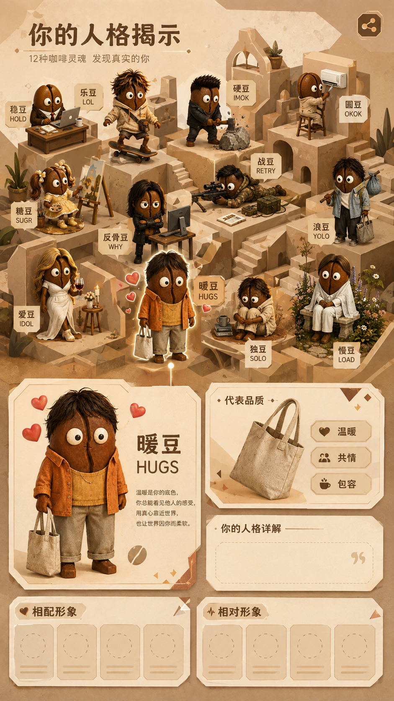
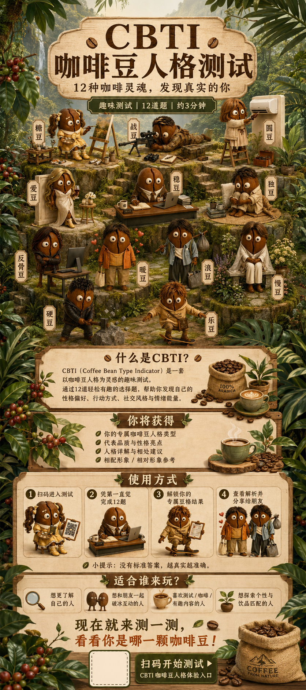

你的豆格是
或许你上辈子是个咖啡？
咖啡豆型人格测试
别急着定义自己。让 12 个生活瞬间，
替你冲出一杯真正的性格风味。
● 豆格来源
● 豆格解析
● 对应推荐饮品
● 为什么与豆格相符
YOUR CBTI RESULT
咖啡豆人格结果
12 种咖啡灵魂 · 发现真实的你
01
 你的结果
你的结果
YOUR BEAN TYPE
春咖咖推荐饮品
你的豆格反馈
豆格来源 · 为什么相符
☕
12 种豆格人格
☕点选任意豆格，查看它的专属人格反馈与春咖咖饮品。


点击任意豆格 · 查看完整资料
YOUR BEAN TYPE
◆ 代表饮品
◆ 你的人格详解
YOUR BEAN TYPE
◆
代表饮品
◆
你的人格详解
♥
相邻豆格
↯
对照豆格
饮用提醒
你的 CBTI 豆格结果
人格原型 · 春咖咖饮品 · 你的专属反馈
♥
♥

YOUR BEAN TYPE
◆
代表饮品
◆
你的人格详解
◆
为什么你们相似？
◆
你的表达倾向
这不是优劣排名，而是你更常使用的表达路径。
♥
相邻豆格
和你共享最多表达习惯的四种豆格
↯
对照豆格
与你形成鲜明互补的四种豆格
饮用提醒